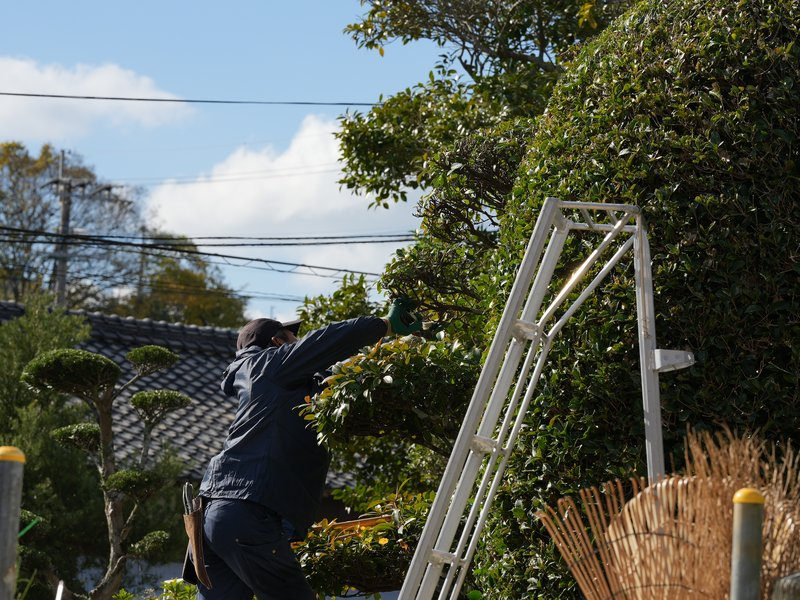
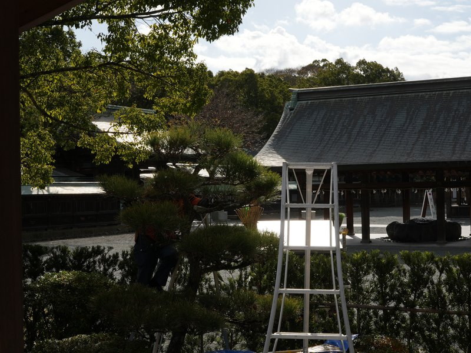
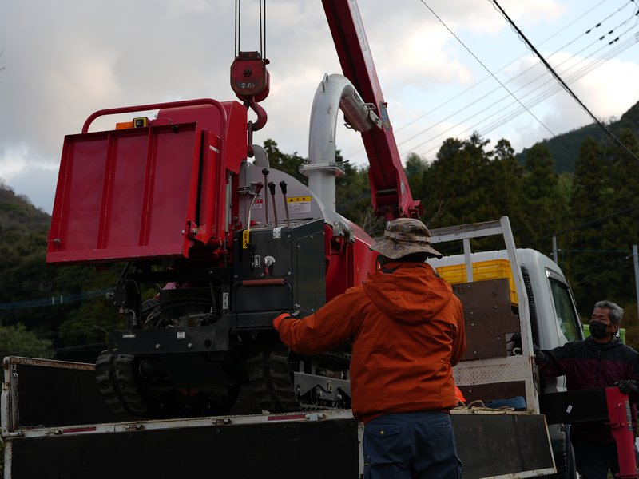
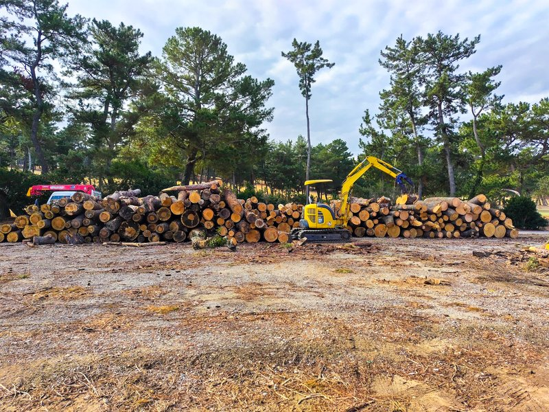

Services
個人宅・マンション・法人・公共施設まで、庭木の剪定と長期的な維持管理を行います。樹の種類・樹齢・生育状況を見極め、その木に合った手入れを提案します。
年間契約での定期管理も対応。庭の変化を長期的に見守り続けることが、松本造園の得意とするところです。

新築・リフォーム時の植栽計画から施工まで。石材・ブロック・舗装工事も含めた外構全般に対応します。
植物の選定から配置まで、その場所の気候・土壌・日当たりを踏まえた長く育つ庭づくりを心がけています。

クレーンや高所作業車が入れない狭い場所・高台・密集地での高木伐採が得意です。ロープを使った特殊伐採技術で、安全かつ丁寧に作業します。
危険木・台風被害木の緊急対応も行っています。伐採後の処理・搬出まで一貫して対応可能です。

公園・道路緑地・公共施設の植栽管理など、行政・公共からの発注にも対応しています。
定期的な草刈り・剪定・病害虫防除など、公共空間の緑を維持・管理する業務を長年にわたって担ってきました。
